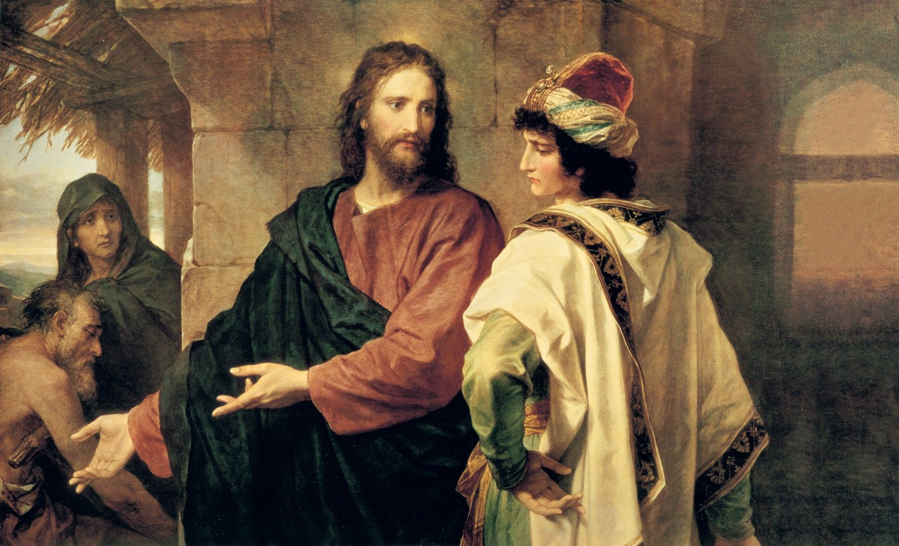
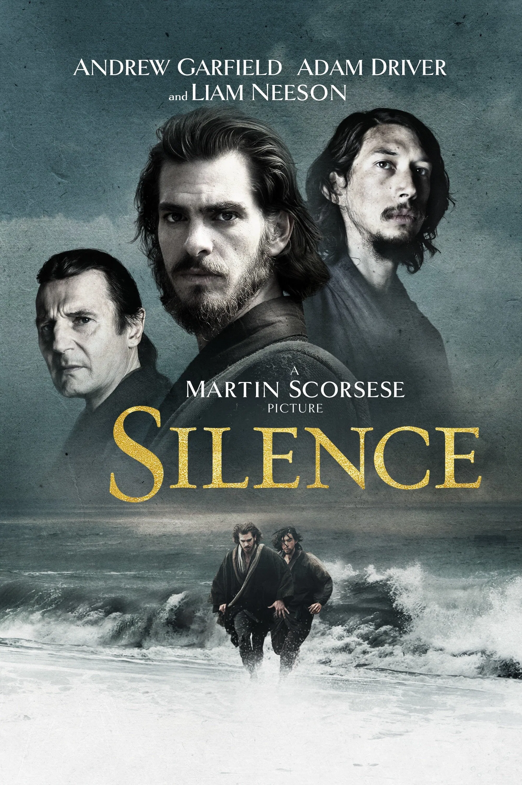

Christian-influenced films often explore themes of redemption, sacrifice, forgiveness, and the struggle between good and evil. Rather than focusing solely on biblical narratives, many filmmakers draw on Christian imagery, moral frameworks, and the tension between human weakness and divine grace. The examples here show one way Christian ideas and symbols appear in cinema, not the full breadth of the tradition.

Martin Scorsese's Silence follows two Jesuit priests who travel to 17th-century Japan to find their mentor and spread Christianity amid brutal persecution. The film grapples with questions of faith, doubt, martyrdom, and the silence of God in the face of suffering—offering a profound meditation on what it means to hold onto belief when tested to the breaking point.
Carl Theodor Dreyer's silent masterpiece presents Joan's trial and execution through intimate close-ups that reveal the saint's inner spiritual world. The film explores the tension between institutional religion and personal faith, showing Joan's unwavering conviction even as church authorities condemn her. Her suffering becomes a meditation on martyrdom, divine calling, and the cost of following one's conscience.
Roland Joffé's epic follows Jesuit missionaries in 18th-century South America who build a mission among the Guaraní people, only to face destruction when colonial politics intervene. The film contrasts two Christian responses to violence—peaceful resistance and armed defense—while exploring themes of redemption, the corrupting influence of power, and the radical call to love those the world considers expendable.